Mijn verjaardag
Deze week heb ik hier mijn 21ste verjaardag gevierd, Apr 5, 2022


 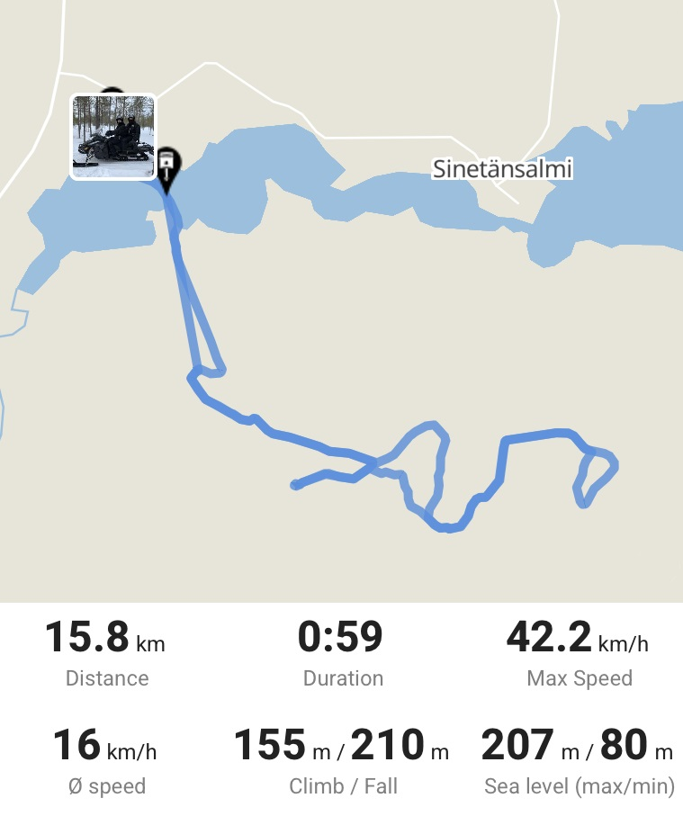
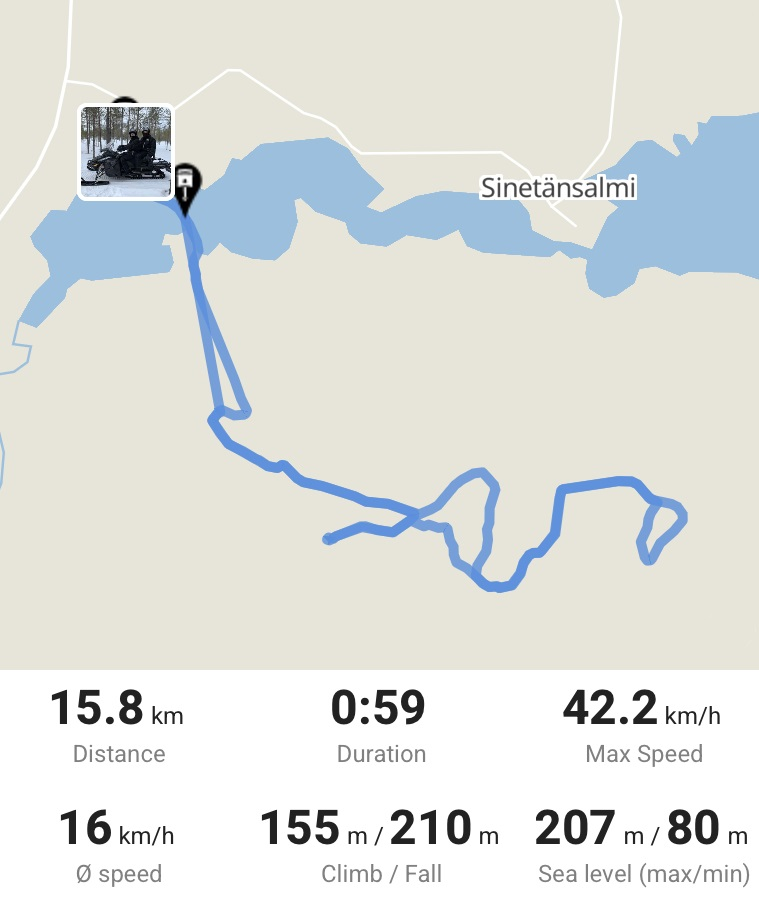


Zoals elke dinsdag ben ik ’s avonds naar het kampvuur geweest. Ook deze keer was het weer
gezellig. Nadat ik vorige week woensdag voor een gesloten deur stond door een staking in het
zwembad. Kon ik afgelopen woensdag weer terug zwemmen.
Donderdagavond hadden we met een groep vrienden een auto
gehuurd om naar een meer 20 minuten uit de stad te rijden. Hier hoopten we het noorderlicht goed
te kunnen bekijken. Maar helaas hadden we die avond pech. Er was enkel een lichte schijn
aanwezig, maar niks spectaculair waar we zo naar uitkeken.
Vrijdag organiseerde onze faculteit een sneeuwscootertocht voor de studenten.
Dit waren niet zo maar sneeuwscooters maar elektrische. Waardoor we in
alle rust door de bossen konden rijden. De machines waren beperkt tot 40 km/h maar je was wel
snel aan deze snelheid. We hebben een tochtje van 16 kilometer gedaan met in het midden een
tussenstop om worstjes te bakken. Er was zelfs een dessert voorzien. Een traditioneel dessert
voor aan het kampvuur vertaald “deeg op een stok”.
Zondag hadden we een gesprek bij de brandweer. Een andere
uitwisselingsstudent doet zijn thesis over hoe drones bij de hulpdiensten beter ingezet kunnen
worden en hoe ze aan hun specifieke noden kunnen voldoen. Uit dit gesprek hebben we geleerd hoe
personen worden gered en welke hulpdiensten welke taken uitvoeren. Dit was een leerrijke
namiddag.
Maandag ben ik 21 geworden. ’s Avonds hadden mijn vrienden een klein verrassingsfeestje
georganiseerd. Dit was een aangename verrassing.
Week 6
Afgelopen week ben ik eindelijk nog eens gaan skiën, Mrt 29, 2022


 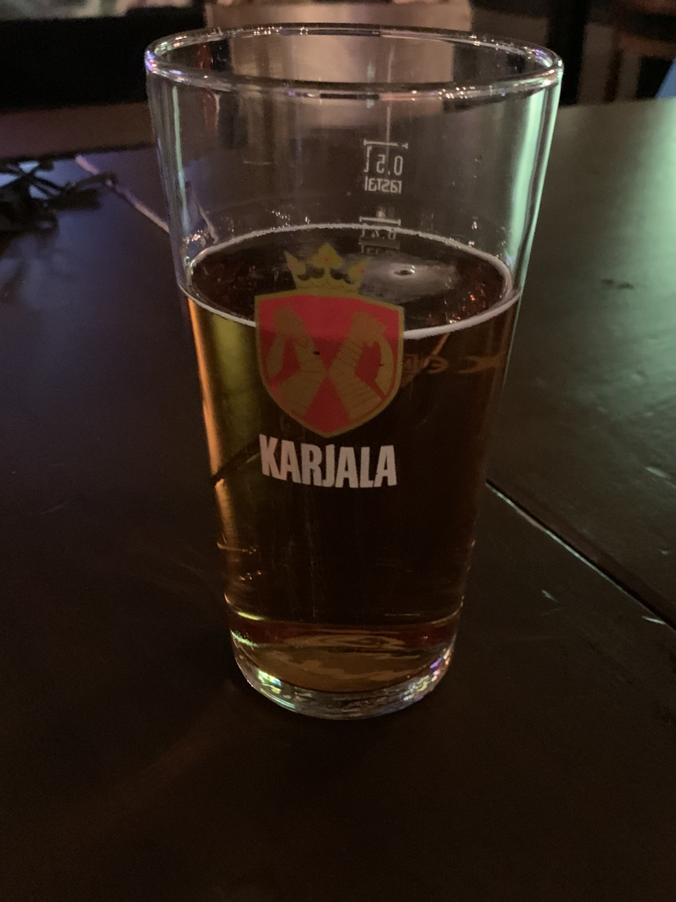
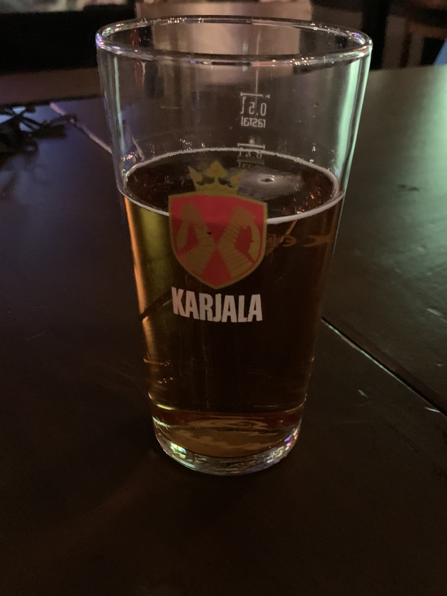

 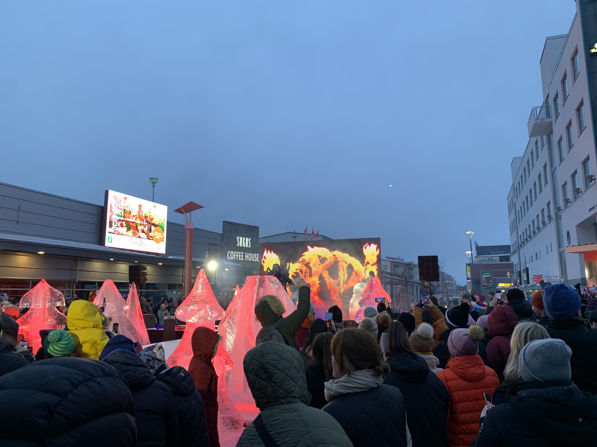
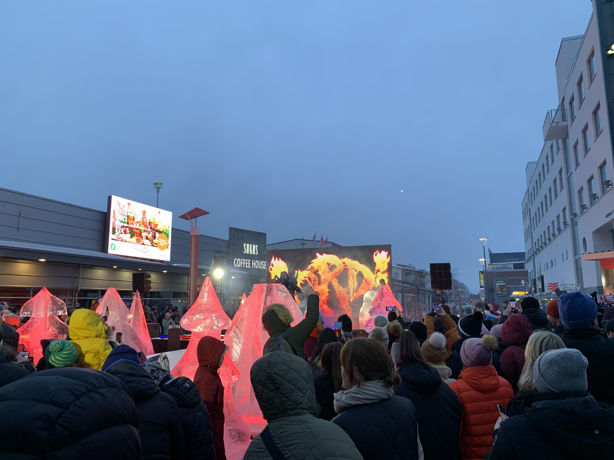

Vorige week dinsdag had de school een uitstap naar een rendierboerderij georganiseerd. Hier
konden we met een rendier op de foto en maakte we een korte sleetocht. Waarna we ook ons
“officieel” rendierrijbewijs kregen. Daarna was het tijd om even op te warmen met een tas thee
en een gebakje. Hierbij werd ons verteld dat ze de rendieren in de lente vrij in de wildernis
laten rondlopen. Wanneer het herfst wordt gaan ze de dieren zoeken om terug te brengen naar
de boerderij. Na deze uitleg wachtte er een heerlijke rendier maaltijd op ons. De smaak
valt te vergelijken met hert van bij ons maar het is veel zachter en heeft een minder sterke
“wild” smaak.
Donderdag was het zoals elke week internationale avond. Hier hebben we een aantal
gezelschapsspellen gespeeld en wat gepoold. Hierna zijn we doorgegaan naar Kansan. Dit is een
bar waar ze voor €2,5 pinten van 0,4l serveren. Een geliefde plaats voor studenten dus. Vrijdag
organiseerde Erasmus student network Lapland een sitsit. Dit valt te vergelijken met een cantus
van bij ons. Liedjes zingen en drinken dus. Nadien zijn we doorgegaan naar de nachtclub Half
Moon.
Zondag ben ik na 2 jaar nog eens kunnen gaan skiën. Het skigebied Ounasvaara is niet zo heel
groot. Met 6 pistes (voor een fatsoenlijke skiër) van ongeveer 600 meter lang ben je snel terug
beneden. Wel was het totaal niet druk. Dat was natuurlijk zeer aangenaam ik kon de hele piste
gebruiken en moest voor niemand wijken (dat is misschien wel de reden waarom ik zo snel terug
beneden was). Desondanks dat het gebied niet zo indrukwekkend was heb ik mij toch goed
geamuseerd. ‘s Avonds was de slot show van de Arctic Design Week. Dit is ‘s werelds meest
noordelijke stadsfestival van designers en influencers. Hier was een catwalk met nadien een
optreden van Lordi. Dit is een Finse hardrock-heavymetalband. Ze staan bekend om hun
monsterlijke teksten en kostuums. Ze werden bekend door hun winnende optreden op het
Eurovisiesongfestival in 2006 met hun nummer Hard Rock Hallelujah.
Achteraf konden we samen met Lordi en de Kerstman op de foto.
Al een maand voorbij
Deze week heb ik een drukke agenda gehad, Mrt 20, 2022
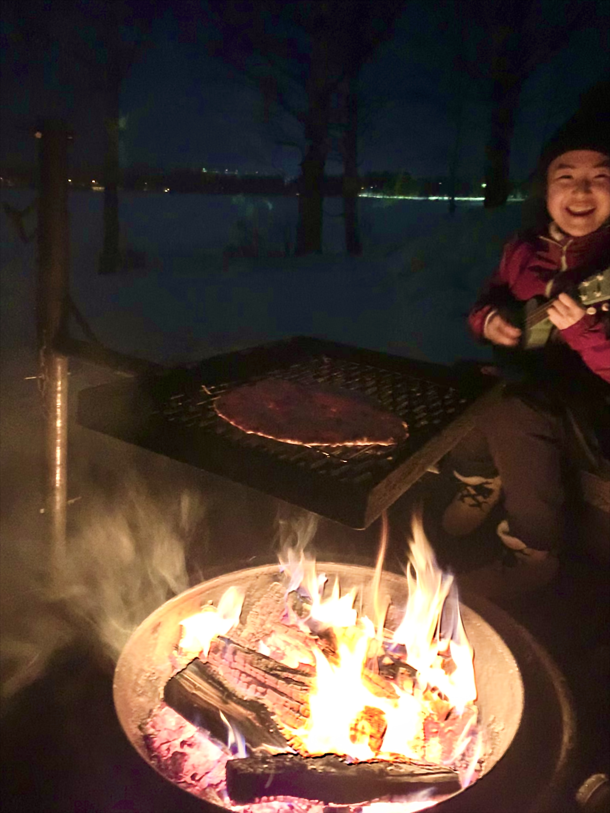 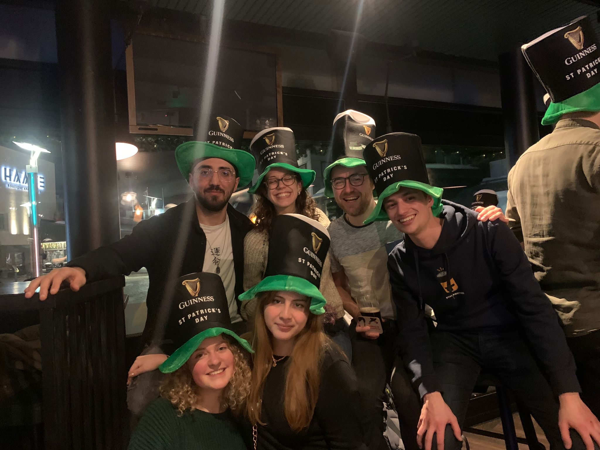


Ik kan het haast niet geloven, mijn eerste maand is al omgevlogen. Ik heb dan ook al een
ontzettend leuke tijd gehad. Ondertussen ben ik al goed gesetteld en heb ik veel over de Finse
cultuur bijgeleerd. Maar ook van andere culturen door de verschillende studenten die ik hier
ontmoette. Het weer begint nu ook beter te worden. Het wordt wat warmer en we krijgen de zon
meer te zien.
Ook deze week ben ik dinsdag naar het kampvuur geweest. Hier had ik een pizza mee naar
toegenomen. Deze was lekker gebakken en had ons goed gesmaakt. Woensdag was het tijd om mijn
zwemtraining te hervatten. Hiervoor zakte ik af naar het stedelijk zwembad. Het is een 25m bad
waar ik rustig mijn banen kon trekken. Donderdag was het St. Patrick’s Day. Hiervoor zakten we
af naar een Ierse pub in het centrum om natuurlijk een Guinness biertje te drinken. Vrijdag zijn
we naar een ijshockeywedstrijd gaan kijken. Dit was zeer leuk om eens bij te wonen. We hadden
goed gesupporterd want Roki (naam van de club van Rovaniemi) had gewonnen. Zaterdag hebben we
een bezoekje gebracht aan Santa Claus Village. Dit is het dorp waar de Kerstman officieel woont.
Hier hebben we een husky park bezocht, we konden de honden aaien en ermee op de foto. Ook kwamen
we veel te weten over de Husky zelf.
Mijn derde week
Deze week heb ik het noorderlicht gezien, Mrt 13, 2022


 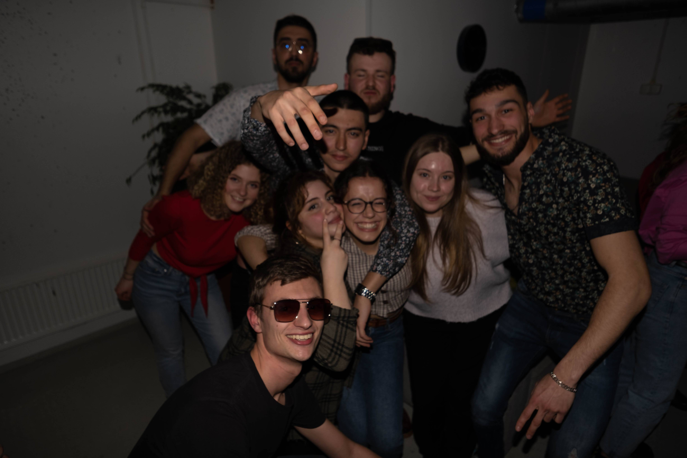
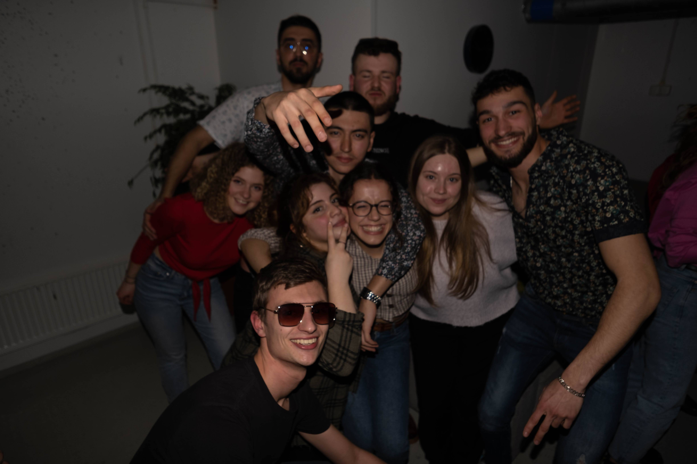
Vorige week zondag ben ik samen met Rasit een Belgische collega en mijn buren, twee verpleegsters die ik op de oriëntatiesessie heb leren kennen naar het wetenschapsmuseum geweest. Hierin vonden we een zaal met opgezette dieren die hier leven. We leerde bij over de geschiedenis, de cultuur en de natuur van Finland. Het museum is best wel groot we zijn op twee en een half uur niet rondgekomen. Dinsdag was het weer tijd voor het kampvuur. Hier hebben we zoals de echte Finnen worstjes gebakken en heb ik weer nieuwe mensen leren kennen. Donderdag ben ik samen met mijn buren naar de internationale avond gegaan. Dit was weer een gezellige avond. Op de terug weg naar huis stelde ik voor om naar de rivier te wandelen om te kijken of we het noorderlicht konden zien. En ja hoor! We hadden geluk. We zagen een kleine groene lichtstreep, niet zo heel spectaculair maar het was toch al mooi om te zien. (Op de foto is het duidelijker dan het was). Vrijdag avond waren we door Rasit uitgenodigd om te feesten. Een paar Belgische vrienden waren deze week op bezoek en gingen zaterdag terug naar huis. Daar kon ik natuurlijk geen neen tegen zeggen. Vandaag ben ik naar een tweedehandswinkel geweest. Hier heb ik glazen, tassen en een ovenschotel gevonden. Zo kan ik mijn kookkunsten nog uitbreiden.
Eerste stageweek
Afgelopen week was mijn eerste stageweek, Mrt 5, 2022
 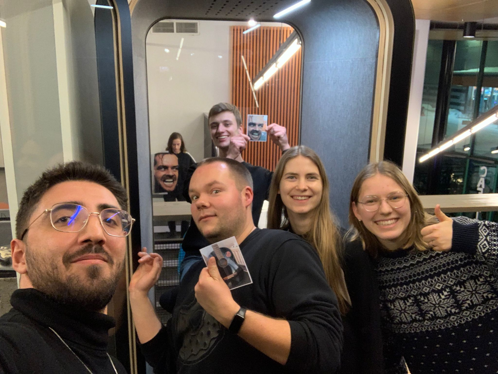
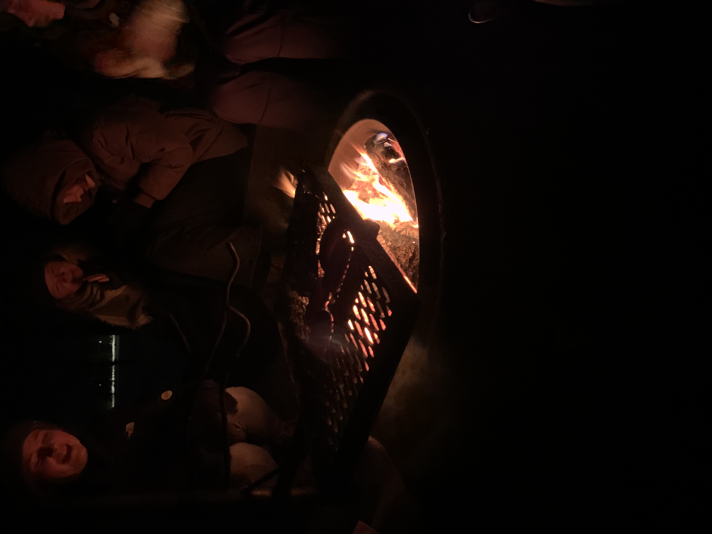
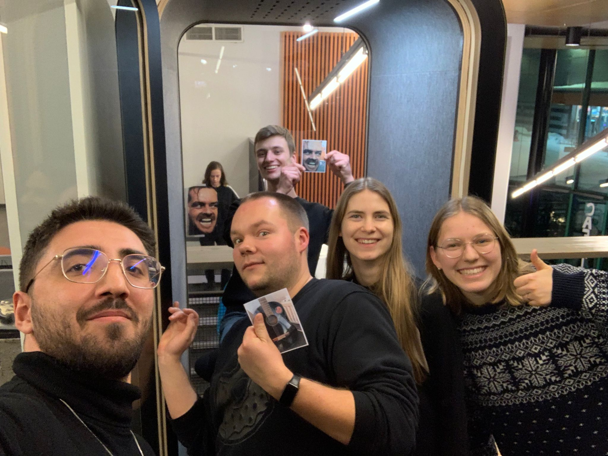
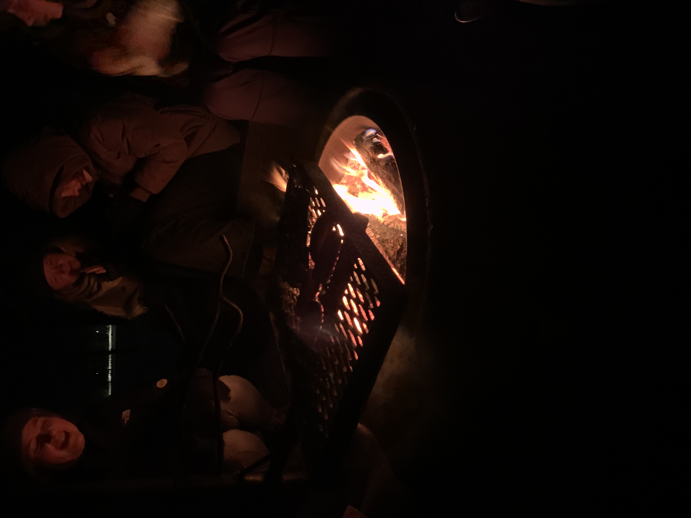
Deze week was het zover. Mijn stage in Finland is van start gegaan. Maandag ontmoette ik Tommi.
Hij vervangt mijn stagebegeleider die afwezig is. Mijn opdracht bestaat er uit om een op afstand
bestuurbare auto om te bouwen tot een zelfrijdend exemplaar. Deze zal later gebruikt worden door
studenten zodat ook zij bij leren over AI & Robotics. Verder is het een leuke werkplek met
vriendelijke en behulpzame collega’s.
Dinsdag ben ik met een aantal andere studenten naar een kampvuur geweest. Deze plaatsen zijn
voorzien door de stad en zijn bevoorraad met hout. Dit was erg gezellig en ik heb een aantal
nieuwe mensen leren kennen. Donderdagavond is het internationale avond. Dit is een avond waar
buitenlandse studenten samenkomen in een café/cultureel centrum. Eerst hebben we gequizd. Daarna
hebben we pingpong en snooker gespeeld. Ook hier leerde ik nieuwe mensen kennen.
Naar de campus
Vandaag heb ik een rondleiding gehad op de campus, Feb 25, 2022

 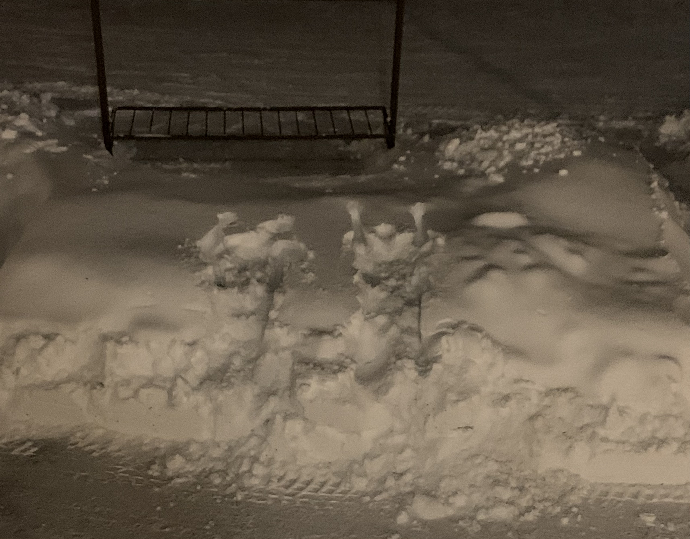
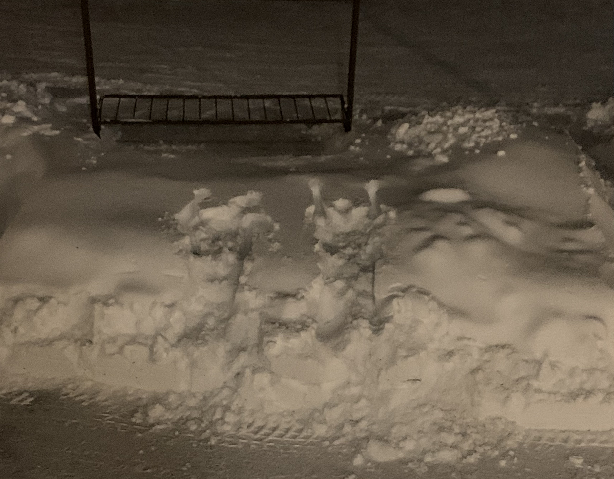
De afgelopen week heb ik de buurt verkend en genoten van het landschap. Maar vandaag was ik uitgenodigd voor een oriëntatie sessie op de campus. Om naar de campus te gaan moet ik 20 minuten met de bus reizen. Ik was hierdoor een halfuurtje te vroeg, maar had in de lobby een comfortabele zetel gevonden. Rond 9 uur zag ik Maria staan, zij is de verantwoordelijke voor buitenlandse studenten. Samen met 3 andere verpleegsters in opleiding die hier ook stage zullen lopen (waaronder ook een Belgische) gingen we naar een vergaderzaal. Hier kregen we algemene uitleg over de campus, Rovaniemi, papieren die we in orde moeten maken en u raad het al … corona. Na deze uitleg gaf Maria mij een rondleiding op de campus. Hier kwam ik twee Belgische collega’s tegen die een week eerder zijn gestart met hun stage. Hierna was het tijd voor lunch. Hiervoor zakten we af naar de cafetaria van de campus. Voor €2,70 heb je hier goed gegeten. Je kan salade nemen, hoofdgerecht en op sommige dagen is er ook een dessert bij. Na deze lekkere maaltijd was het tijd om terug te gaan naar het appartement. ’s Avonds nog even in de sauna met Miku en zoals echte Finnen in de sneeuw springen. Mijn eerste week in Finland zit er al op.
Het vertrek
De eerste dag, Feb 18, 2022

’s Ochtens vroeg 4 uur, de wekker loopt af. Het is eindelijk tijd om te vertrekken. Hier heb ik zo lang naar uitgekeken. Samen met mijn ouders en vriendin rijden we naar de Zaventem. Nog een dikke knuffel en dan moet ik door de douane heen. Na 2 vluchten en 5 uur reizen ben ik in Rovaniemi. Mijn meter Viivi wachtte mij op en bracht mij naar mijn appartement. Hier ontmoete ik mijn huisgenoot Miku. Hij is een Japanse student en heeft vorig semester in Portugal gestudeerd. Na de kennismaking was het tijd om in te huizen. Koffers uitpakken bed opmaken en wat afstoffen. Hierna ging ik naar de winkel. Aangezien ik niet veel ervaring heb met koken besloot ik hotdogs te maken. Een groot onderdeel van de Finse cultuur is het nemen van sauna's. Mijn appartementsblok heeft zelfs zijn eigen sauna bij de huur inbegrepen. Mijn huisgenoot had deze voor de avond gereserveerd en vroeg of ik mee kwam. Dat wilde ik maar al te graag. Zo de eerste dag heb ik al overleefd.